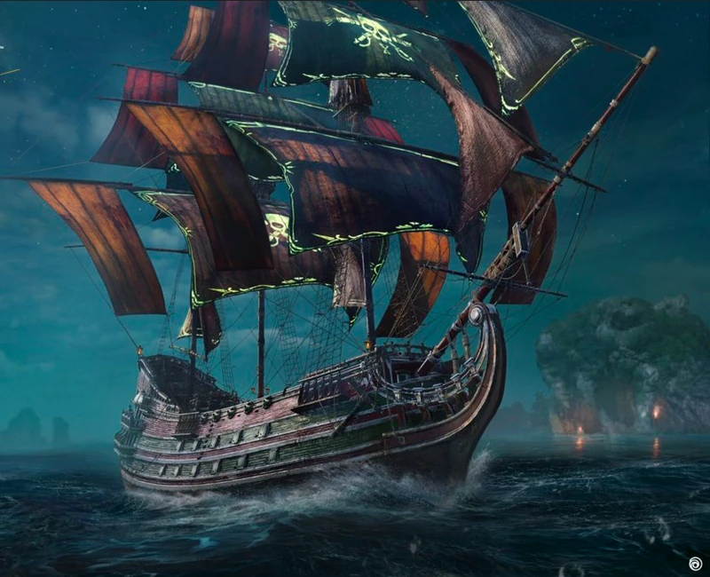

Dieser Guide richtet sich an Solo-Spieler ab Kingpin-Rank. Schwerpunkt ist die Brigantine mit Long Cannons + Torpedos, ergänzt um die besten alternativen Solo-PvE-Builds und alle wichtigen Mechaniken von Helm Empire bis Seasonal Mastery.
Bereiche
Progression
Roadmap von Outcast bis Kingpin und darüber hinaus. Markiert „Du bist hier".
Start hierBuilds
Haupt-Build Brigantine Long Cannons + Torpedos plus 8 alternative Top-Solo-PvE-Builds.
Beginner · Intermediate · EndgameSkill Trees
Seasonal Mastery (resettet jede Season) und Helm Skill Tree (permanent) — Priorisierung.
Y3S1Mechaniken
Helm Empire, Manufactories, World Tiers, Ascension, Mythic Modifications, Währungen.
GrundlagenHostile Takeovers
Solo-Strategien ohne PvP — Off-Peak, Buyouts, Padewakang-Build.
AktivitätGlossar
Alle Fachbegriffe alphabetisch, Tooltips überall im Guide verlinkt.
NachschlagenWichtigste Neuerungen in Y3S1 „Shattered Seas"
- Neue Schiffsklasse Galleon (40 Gunports, Iron-Thunder-Perk).
- Seasonal Mastery-Tree mit 80 Leveln und Perks bei 10/30/60.
- Mythic Modifications via Nightshade Pearl aus WT3/WT4.
- World Tier 3 (Rogue Storms) und WT4 (Brutal Tempest) — Quests resetten jede Season.
- Faction War „Safeguard" (12.05.–11.08.2026).